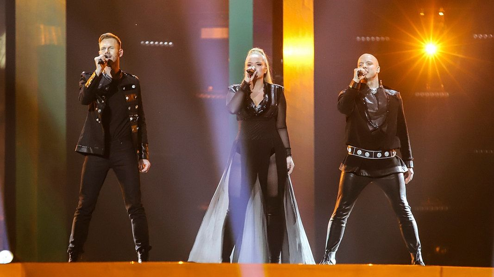

Eurovision is a bit of a touchy subject right now (URGHHH DAMN THAT CORRUPT HYPOCRITICAL ORGANISATION) however some banger songs have come out of the contest. This is Finland's entry from 2019. The public absolutely adored this song, giving it 291 points. However the juries do not understand what real art is, so this masterpiece was snubbed.
I though the song was fitting because we're like in the sky right now (in space- on another planet). Also it's just SO fun and catchy. I especially love the bald man who brings the whole song together. What an icon.